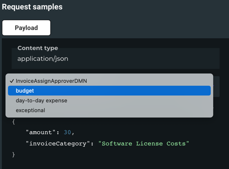
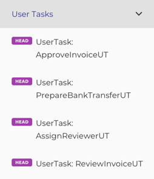

API Documentation
The focus is to describe or better define how someone must interact with your processes.
This is done with ReDoc which is an Open API documentation tool. So there are some quirks, but I think you get used to them fast.
Why
To have accurate and not outdated documentation is a challenge. The closest you can get, is when your running- or tested code is the documentation.
And this is what we do here! Together with the Simulations you get the most accurate documentation possible without having too much work.
Getting Started
The documentation uses the BPMNs you created - in this context I refer to the Bpmn DSL
Let's start with a basic example:
// put your api in a package of your project
package camundala.examples.invoice
// import camundala dependencies
import camundala.api.*
import camundala.bpmn.*
// import the projects bpmns (Processes, UserTasks etc.)
import camundala.examples.invoice.bpmn.*
// import the projects domain (inputs and outputs)
// - needed if you have additional infos (e.g.not needed for simulation)
import camundala.examples.invoice.domain.*
// define an object that extends from a common Api Creator
object ApiProjectCreator extends DefaultApiCreator:
// technical name of the project
val projectName = "invoice-example"
// readable name of the project
protected val title = "Invoice Example Process API"
// version of your project
protected val version = "1.0"
// the documentation
document (
api(`Invoice Receipt`)(
InvoiceAssignApproverDMN,
ApproveInvoiceUT,
PrepareBankTransferUT
),
api(`Review Invoice`)(
AssignReviewerUT,
ReviewInvoiceUT
),
group("DMNs")(
InvoiceAssignApproverDMN
)
)document
This is the entry point for your documentation.
Usually there is one documentation for a project.
A document consists of one or more apis or groups.
api
Usually an api is the documentation of a process with its interactions or a DMN Decision.
group
We can group our apis.
Create the Documentation
-
In your sbt-console:
run- If you have more runnable applications you need to choose the ApiCreator class.
- This creates a YAML file (Open API) with your documentation.
-
In the console you find the paths to the created documentation.
- By default it's here:
YOUR_PROJECT_PATH/openApi.yml
- There is also a link to an HTML (
YOUR_PROJECT_PATH/OpenApi.html). You can copy it from here OpenApi.html
- By default it's here:
- Open
OpenApi.htmlin a webserver (e.g. from your IDE). The parts of the document are described in the following chapters.
Document
Naming
The DSL is using the names of your BPMN Processes just for Taging (grouping in the document structure).
Example:

- The tag is the name created from the variable
Invoice Receipt. - Each Api is composed by the endpointType (e.g. Process) and the id of the BPMN object (e.g. example-invoice-c7).
Strange Stuff
As we use a REST API documentation tool, there are some strange things to get used to.
head
As there are not really services behind*, we just use the HTTP method HEAD.
path
We create a unique path, like endpointType / tag / nameOrId. This is required as Open API skips Apis with identical paths.
Responses 200
The output variables are described in the 200 (ok) response, as a status is required by Open API.
See Postman Open API for additional information.
Configuration
This is the default Configuration:
case class ApiConfig(
// define tenant if you have one
tenantId: Option[String] = None,
// contact email / phone, if there are questions
contact: Option[Contact] = None,
// REST endpoint (for testing API)
endpoint: String = "http://localhost:8080/engine-rest",
// Base Path of your project (if changed - all doc paths will be adjusted)
basePath: os.Path = os.pwd,
openApiPath: os.Path = os.pwd / "openApi.yml",
postmanOpenApiPath: os.Path = os.pwd / "postmanOpenApi.yml",
openApiDocuPath: os.Path = os.pwd / "OpenApi.html",
postmanOpenApiDocuPath: os.Path = os.pwd / "PostmanOpenApi.html",
// If you work with JIRA, you can add matchers that will create automatically URLs to JIRA Tasks
jiraUrls: Map[String, String] = Map.empty,
// Configure your project setup
projectsConfig: ProjectsConfig = ProjectsConfig(),
// The URL of your published documentations
// myProject => s"http://mycompany/bpmnDocs/${myProject}"
docProjectUrl: String => String = proj => s"No URL defined for $proj",
// If you want to integrate your BPMNs and DMNs in your Documentation.
// Add the path the diagrams are located on your webserver.
// myProject => s"http://mycompany/bpmnDocs/${myProject}/${diagramDownloadPath}"
// if you want to have a diagram - you must define this!
diagramDownloadPath: Option[String] = None,
// if you want to adjust the diagramName
diagramNameAdjuster: Option[String => String] = None,
// by default the Api are optimized in a way that each Api is listed just ones.
// so for example, if you list your DMNs extra, they will be removed from the catalog.md
catalogOptimized: Boolean = true
)You can override your configuration by creating your own ApiConfig,
or you can have a hierarchy that you define.
E.g. company -> department -> project - see next chapter.
override protected def apiConfig: ApiConfig =
super.apiConfig
.withTenantId("mycompany")
.withDocProjectUrl(myProject => s"http://mycompany.ch/bpmnDocs/$myProject")
.withLocalProjectPaths(
os.pwd / os.up / os.up / "company-packages",
os.pwd / os.up / os.up / "deparment-a-packages")
.withJiraUrls("COM" -> "https://issue.mycompany.ch/browse") Default ApiCreator
The default Creator will create a standard documentation, that you can extend with Custom ApiCreators.
Standard Features:
README
If you have a read me in your base path (config.basePath / "README.md),
we integrate it automatically in the documentation - as a visible part.
CHANGELOG
If you have a change log in your base path (config.basePath / "CHANGELOG.md),
we integrate it automatically in the documentation - as a collapsed part.
General Variables
General variables that are supported in any Process- and/or ExternalTask-Worker are documented - in a collapsed part. By default, the following Variables are supported:
enum InputParams:
// mocking
case servicesMocked
case mockedWorkers
case outputMock
case outputServiceMock
// mapping
case manualOutMapping
case outputVariables
case handledErrors
case regexHandledErrors
// authorization
case impersonateUserId
end InputParamsThat expects that your implementation can handle these variables.
If you are using our Workers they are supported out of the box!
If you only want to support some of them, you can override them:
override def supportedVariables: Seq[InputParams] = Seq(
servicesMocked,
outputMock,
outputServiceMock,
handledErrors,
regexHandledErrors,
impersonateUserId
)Jira Tickets
We replace configured JIRA Ticket pattern with its URL.
Configuration:
override protected def apiConfig: ApiConfig =
super.apiConfig
.withJiraUrls(JIRA_PROJECT -> JIRA_URL) - JIRA_PROJECT: The shortcut for the JIRA Project (prefix of jira ticket number).
- JIRA_URL: The base URL to browse JIRA tickets, e.g.
https://issue.mycompany.ch/browse.
Now in the Change Log all occurrences of the regex JIRA_PROJECT-(\\d+) (-> JIRA_TICKET)
will be replaced with [JIRA_TICKET]($url/JIRA_TICKET).
In the generated documentation this is a link to the according Jira ticket.
BPMN diagrams
You can include your BPMN- and DMN diagrams directly, doing the following steps:
-
Configure the path, where you provide your diagrams - this is the relative path, from where your OpenApi.html is located.
override protected def apiConfig: ApiConfig = super.apiConfig .withDiagramDownloadPath("diagrams") -
Adjust OpenApi.html with the correct path:
function openFromUrl(url, viewer) { console.log('attempting to open <' + url + '>'); // adjust relative path to your BPMNs $.ajax("diagrams/" + url, {dataType: 'text'}).done(async function (xml) ...
If you want to check the diagrams locally, you can use src/main/resources/
Cawemo BPMN diagrams
We stopped using Cawemo diagrams, as the synchronisation is manually - yes we are programmers🦥😉. We recommend using Diagrams directly from your project - see previous chapter.
If you are using Cawemo you can add a link to the folder, your BPMNs and DMNs are located.
Configuration:
override protected def apiConfig: ApiConfig =
super.apiConfig
.withCawemoFolder("877ccd9b-4e0c-4810-801b-4314372e76c1--myProject")Here an example with these features:
Custom ApiCreator
In General you will have your own Creator that holds the configuration, pattern for descriptions etc. Here is an example of a companies Creator:
trait MyCompanyApiCreator extends DefaultApiCreator :
// adjust the config with company specifics - see above
override protected def apiConfig: ApiConfig =
super.apiConfig
.with..
// takes the general descriptions and adds company specific stuff
override def description =
super.description.map(descr =>
s"""|$descr
|$postmanApi
|$changeLog
|$releasing
|""".stripMargin
)Now in your department you can have yet another one:
trait MyDepartmenetApiCreator extends MyCompanyApiCreator :
// adjust the Company config with department specifics - see above
override protected def apiConfig: ApiConfig =
super.apiConfig
.with..Apis
Each Api defines its inputs and outputs, as well as if needed additional information.
Based on the BPMN objects
Implicit Apis
All Apis that have no 'children', are created automatically from their BPMN objects.
So api is optional (example AssignReviewerUT is equal to api(AssignReviewerUT)).
You can do whatever you prefer.
Process Apis
A process Api must be specific, if you want to group all its interactions in the processes tag.
...
api(PROCESS)(
INTERACTIONS
)
...- PROCESS: The Process you want to document.
- INTERACTIONS: The interactions with this process, like User Tasks.
Example:
...
api(`Invoice Receipt`)(
InvoiceAssignApproverDMN,
ApproveInvoiceUT,
PrepareBankTransferUT
)
...This will create the following structure in the doc:
Input-/ Output-Variables
The input- and output variables are taken from the domain model of the BPMN object.
Example:
object ReviewInvoice extends BpmnDsl:
val processName = "example-invoice-c7-review"
@description("Same Input as _InvoiceReceipt_, only different Mocking")
case class In(
creditor: String = "Great Pizza for Everyone Inc.",
amount: Double = 300.0,
invoiceCategory: InvoiceCategory = InvoiceCategory.`Travel Expenses`,
invoiceNumber: String = "I-12345",
@description("You can let the Archive Service fail for testing.")
shouldFail: Option[Boolean] = None,
@description("You can mock me by providing the output.")
outputMock: Option[Out] = None
)
case class Out(
@description("Flag that is set by the Reviewer")
clarified: Boolean = true
)
...
lazy val example: Process[In, Out] =
process(
id = processName,
descr = "This starts the Review Invoice Process.",
in = In(), // INPUT
out = Out() // OUTPUT
)This creates this input description documentation:
And it creates this output description documentation:

Examples
By default we create an example for the input- and one for the output variables. You find them on the right side of your Api documentation.
If you want to add more examples, you can do this the following ways:
input
Just add another input object and give it a name:
private lazy val InvoiceAssignApproverDMN =
bpmn.InvoiceAssignApproverDMN
.withInExample(budget)
.withInExample(`day-to-day expense`)
.withInExample(exceptional)
val budget = SelectApproverGroup()
val `day-to-day expense` = SelectApproverGroup(125, InvoiceCategory.Misc)
val exceptional = SelectApproverGroup(12345, InvoiceCategory.Misc)Here the name of the example is taken from the variable name automatically.
In the documentation you can now select the different examples.

output
Same with output objects:
private lazy val ReviewInvoiceUT =
bpmn.ReviewInvoiceUT
.withOutExample("Invoice clarified", InvoiceReviewed())
.withOutExample("Invoice NOT clarified", InvoiceReviewed(false))Here the name of the example is given explicitly.
In the documentation you can now select the different examples.

in- and output
You can also add input- and output examples in one step:
private lazy val InvoiceAssignApproverDMN =
bpmn.InvoiceAssignApproverDMN
.withExample(
"budget",
bpmn.InvoiceAssignApproverDMN
.withIn(SelectApproverGroup())
.withOut(CollectEntries(ApproverGroup.management))
)
.withExample(
"day-to-day expense",
bpmn.InvoiceAssignApproverDMN
.withIn(SelectApproverGroup(125, InvoiceCategory.Misc))
.withOut(
CollectEntries(ApproverGroup.accounting, ApproverGroup.sales)
)
)Project dependencies
To know where your process is used and what processes your process is using, is very helpful.
Camundala uses Git for this and creates bullet lists grouped by projects:
It works for BPMNs and DMNs.
Used in 2 Project(s)
-
myProjectA
- myProcessAA
- myProcessAC
-
myProjectB
- myProcessBA
Uses 1 Project(s)
- myHelperProject
- myHelperProcess
- myHelperDMN
GitConfigs
All that is needed, is to configure the projects you want to check for dependencies.
Example:
GitConfigs(
os.pwd / os.up / "git-temp",
Seq(
GitConfig(
cloneUrl = "https://github.com/mycompany",
projects = Seq(
"myHelperProject",
"myProject",
"myProjectA",
"myProjectB"
)
)
)
)This will clone or update these projects ($cloneUrl/$project.git) into ../../git-temp,
for example https://github.com/mycompany/myProject.git.
Used Dependency Resolution
For each Process (BPMN):
- Takes the id of the DMN or BPMN.
- Checks all DMNs and BPMNs of all configured projects, if they refer this id.
- Lists these DMNs and BPMNs, grouped by their projects.
Uses Dependency Resolution
At the moment we refer BPMNs and DMNs like this:
bpmnIdprojectId:bpmnId
This is not standard Camunda and it involves adjustments of the BPMN/DMN during deployment.
As ids must be unique, we will change this in the future and resolve the Ids by searching all configured project for these ids.
TODO: implement.
For each Process (BPMN or DMN):
- Extracts all referred ids of DMNs and BPMNs.
- Lists the DMNs and BPMNs, grouped by their projects - Generic Service Processes are listed by their service name.
Generic Service Process
At the moment we wrap all our REST API calls with a process. This may change in the future, as at the moment - processes is the only way to abstract over External Tasks in our company😢 (when adding additional functionality like mocking).
However, it still makes sense to hide technical details and to document these Services, if you want to use them in more than one process.
For the usability of Services in a process, we create a Generic Service Process.
trait GenericServiceIn:
def serviceName: StringJust inherit this Trait in your input class:
object MyService
extends BpmnDsl:
case class In(
...
serviceName: String = "myService-get",
...
) extends GenericServiceIn
...This will adjust the following things in the API documentation:
- No Bpmn Diagram is inlined.
- Needed to find Usages in other Processes.
And in the Postman API:
- The endpointName is just the serviceName, instead of s"$endpointType: ${inOutApi.id}".
Groups
You can organize your Apis within Groups. This is especially useful if you have a lot of processes or dmns.
...
group(NAME_OF_GROUP)(
APIs
)
...- NAMEOFGROUP: A name for your group.
- APIs: A list of BPMN objects (they will be translated to apis automatically).
Example:
...
group("User Tasks")(
ApproveInvoiceUT,
PrepareBankTransferUT,
AssignReviewerUT,
ReviewInvoiceUT
)
...This will create the following structure in the doc:

Be aware that document only supports two levels.
This is because we use Tags to structure the APIs.
Correct 1-2 Levels:
api(`Review Invoice`)(
AssignReviewerUT,
ReviewInvoiceUT
),
OtherExternalTask,
group("DMNs")(
InvoiceAssignApproverDMN
),
group("Helper Processes")(
MyServiceProcess
),Wrong > 2 Levels:
api(`Review Invoice`)(
api(MyServiceProcess)(
SelectServiceUT
)
)
group("Cool Processes")(
api(MyServiceProcess)(
SelectServiceUT
)
)Postman Open API
Next to the Documentation, it creates also a YAML that you can import into Postman. With a few manual adjustments (due to restrictions in Open API) you have test client for your processes.
- By default it's here:
YOUR_PROJECT_PATH/postmanOpenApi.yml - There is also a link to an HTML (
YOUR_PROJECT_PATH/PostmanOpenApi.html). You can copy it from here PostmanOpenApi.html
Import into Postman:
-
Show import settings:
- Select: Copy collections to workspace
- Select Folder organization: Tags
Manual adjustments in most request:
-
Remove part of the path:
- if you have a path like this:
{{baseUrl}}/decision-definition/key/:key/--REMOVE:example-invoice-c7-assignApprover--/evaluate - just delete this part:
--REMOVE:some identifier--
- if you have a path like this:
-
Connect the requests (set the reference to the process or task)
-
for Start Process:
let processInstanceId = pm.response.json().id console.log("processInstanceId: " + processInstanceId) pm.collectionVariables.set("processInstanceId", processInstanceId) -
for Get Task:
let taskId = pm.response.json()[0].id console.log("taskId: " + taskId) pm.collectionVariables.set("taskId", taskId)
-
for Start Process:
That it is not possible to have the API Documentation as the postman Open API is not nice.
However as we can describe a UserTask as one API, it takes three requests to actually handle a UserTask.
In the future we may provide a REST API that will work for both.
This would also allow a painless transition to Camunda 8.